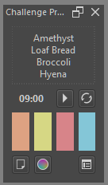
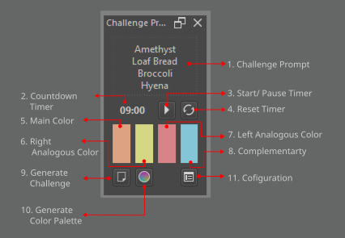

Challenge Prompt Maker
Challenge Prompt Maker is a docker that generates drawing challenge prompts
from a list of categories along side a four slot color palette in split complementary color scheme.
The plugin uses HSV to generate the color pairing.
User Interface


Usage
The docker will generate challenge prompt and a four slot color palette.
Note: All docker action only works if a canvas is present.
To Generate Prompt
1. Press the Generate Challenge Button.
To Generate New Color Palette
1. Press the Generate Color Palette Button.
To Start the Timer
1. Press the Play Button beside the time clock.
To Configure Settubgs
1. Press the Configure Button.